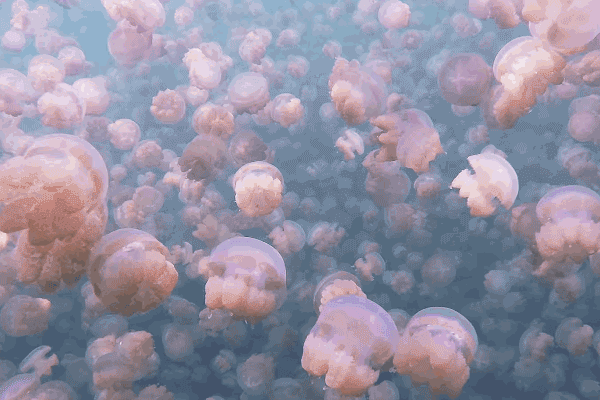

mikki is addicted to magazines
Plasma 5: 'thanks for the Mars glasses'
Interplanetary Art and Science Magazine
Featuring a Berlin special, the exploration of Mars, the creation of humanoid robots, nerd hotspots in NYC, new advancements from NASA.
22 x 28 cm
Present Books 2019
Berlin, Germany
Found in NYC, 10/2019
Kaleidoscope 34
A magazine about contemporary art and visual culture.
Features include Cyprien Gaillard, Martine Rose, Dunes and the late H.R. Giger.
28 x 21 cm
Kaleidoscope Press 2019
Milan, Italy
Found in NYC, 10/2019
Post Butt
A study of the female posterior.
The phenomenon of bootyfication exists in many contexts, as varied as the exploitation of the body in colonialism to 90s hip-hop culture. Post-Butt analyses the virility of images in our mediated society. It presents a case study of the image of the female behind, exploring its influence in media, society and art.
16.5 × 24.0 cm
Onamatopee Projects 2018
Eindhoven, Netherlands
Found in Bologna, Italy, 02/2019
Wax 8: FEAR
Bi-annual publication exploring the intersection of art, culture and surfing.
Featuring Sergiy Barchuk, Travis Diehl, Dingum, Yodit Eklund, David Brandon Geeting, Candice Lin, Molly Prentiss, Raf Rennie, Dane Reynolds, Richard Ross, Brea Souders, Rell Sunn, Glenn Walton, Carmen Winant, Samson Young and more.
20 x 27 cm
Wax Studios 2017
New York, New York
Acquired in Boston, 12/18
Dissent S/S 2019: What is the Nation Good For?
“A pillar of leftist intellectual provocation.”
—New York Times
This issue discusses national neoliberalism in Turkey, Kwame Nkrumah and the quest for pan-African independence, political scenarios for climate disaster, the failure of left-wing nationalism in Germany, economist and politician Yanis Varoufakis, and more.
25.4 x 17 cm
Penn Press 2019
New York, New York
Found in NYC, 07/19
Cakeboy 8: Lush
Self-described "breeding ground for disruptive faggotry".
A "cake boy," per Amy Heckerling's seminal teen masterpiece Clueless, is a "disco-dancing, Oscar Wilde-reading, Streisand ticket-holding friend of Dorothy." This issue features AJA & Merlot, Sasha Geffen, Ty Mitchell, Diedrick Brackens, Lorelei Ramirez, Mayukh Sen, Jason Kim, Aldrin Valdez, and DeVonn Francis.
28 x 21 cm
Cakeboy Magazine 2019
United Kingdom
Found in NYC, 06/19
Autre Vol.2, Issue 8
A manual for culture.
Introducing Autre’s 8th issue, featuring the inimitable Pope Of Trash himself, JOHN WATERS, in conversation with LA-based artist and musician SETH BOGART. It’s the filthiest interview they have ever published. In this issue, you will also find an essay on TOMASO BUZZI’S erotic city with photographs by MATTHEW MODINE, an essay by photographer MATTHEW ROLSTON on Harper’s Bazaar’s editor Carmel Snow, and much more.
30.988cm x 25.4cm
Autre Magazine 2019
Los Angeles, CA
Found in St. Louis, 10/19
Borshch 4: Sound Mind
A biannual publication for electronic music.
Borshch 4 explores the power of music to reach the darkest corners of the psyche and drive out an unquiet spirit. To purge, transform, heal, and enlighten. After a radical personal transformation, Aïsha Devi makes music with an intention to purge and heal people. Awoken after a physical trauma, Prequel Tapes reclaims his forgotten sound and reveals a new musical identity.
30.988cm x 25.4cm
Borshch Magazine 2019
Berlin, Germany
Found in St. Louis, 10/19
Sleek 60: Cult of the Self
Independent art and culture magazine
In this issue of SLEEK we wanted to explore self-help. But instead of recommending the perfect perfume or the best film to watch for a night on the sofa, we’re casting a side-eye at a worrying cultural phenomenon.
30.988cm x 25.4cm
Sleek Magazine 2019
Berlin, Germany
Found in Italy, 02/19
Tunica 7: Extended Fantasy
Experimental receptacle of international culture
A radically designed publication FEATURING: VIRGIL ABLOH, LIL MIQUELA, PAZ DE LA HUERTA, SÁNCHEZ-KANE, MARGUERITE HUMEAU, ERIC WAREHEIM, WESLAH, GUCCIMAZE, JUGOCENIA, BALI BABY, and more.
22.86 x 31.75cm
Tunica Studio 2019
New York, New York
Acquired in NYC, 10/19
Mold 4: Designing for the Senses
Magazine about the future of food
Issue 4 probes the ways that designing for the senses can lead to embracing the ingredients, flavors, experiences and routines needed to address the coming food crisis. It offers a blueprint for designing a truly sustainable, hyper-regional food ecology built on flavor and questions the philosophical underpinnings surrounding the hierarchy of the senses.
22.86 x 31.75cm
Tallinn Printing 2019
Tallinn, Estonia
Acquired in Berlin, Germany,04/19
Eye on Design 5: Distraction
New work from emerging designers.
This issue, guest designed by Studio Pandan, looks at how design influences entertainment, technology, work—and your ability to pay attention to it all. It explores how the influx of notifications, screens, and unread emails are shaping the way we think and probes how distraction can be a necessary element in the creative process.
16.5x23.0 cm
Hemlock Printers 2019
Burnaby, British Columbia
Acquired in NYC, 06/19
Flash Art 323
International contemporary art magazine.
Bodily figuration features prominently in this issue of Flash Art, which includes Judy Chicago’s Immolation (1972) from her “Women and Smoke” series (1968–74). This special dossier seeks to supplement the artist’s popular recognition with a plurality of critical voices. Also featuring Tania Bruguera, Tau Lewis, and Amy Sillman.
22.86 x 31.75cm
Flash Art 2019
Milan, Italy
Acquired in Berlin, Germany, 04/19
Cult Classic 2: Preservation
Collective chronicling the people shaping our cultural landscape.
This issue highlights those staying true to themselves. Updating without gentrifying. Sampling without appropriating. Paying homage to their roots while writing the next chapter in the legacy of their genre.Featuring Uzumaki Cepeda, Casper Wright, and Toro y Moi.
22.86 x 30cm
Cult Classic 2018
Portland, Oregon
Acquired in NYC, 07/19
Gym Class Magazine Vol 2 #1: The Magazine Issue
A magazine about magazines.
This new iteration of the beloved 10-year project repackages previously published stories around the theme of magazines. Featuring works on David Remnick, Si Newhouse, Jake Phelps, Carine Roitfeld, Oliver Zahm, and more.
21.59 x 27.94
Bryant Gregor Limited 2019
London, UK
Acquired in Boston, 05/19
It's Freezing in LA! 2: Fire
An independent magazine about climate change.
In issue 2 we consider how best to prioritise Indigenous voices, redesign design questions and take a look at a long history of attempts to change the weather. We look at peat bogs and algae; cosmetics and tungsten bulbs, and untangle a few more strands of humanity's greatest challenge.
22.86 x 30cm
The Sustainable Print Company 2019
London, UK
Acquired in Boston, 02/19
+More soon
Mikki is addicted to magazines is loading...